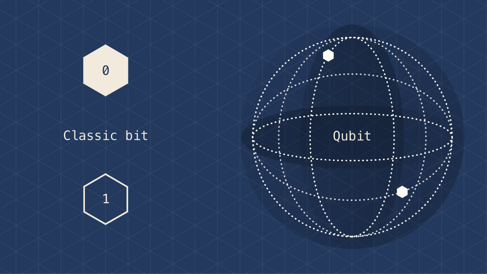
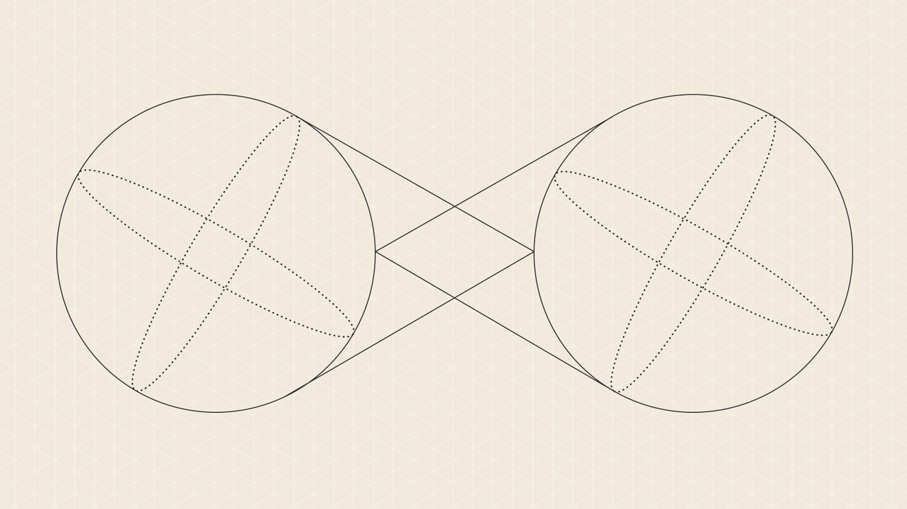
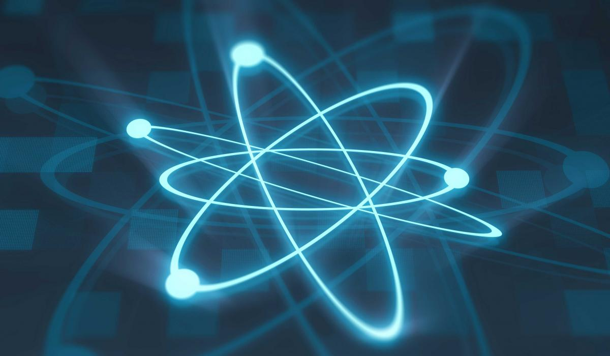

Os descobrimentos na área da física quântica, possibilitaram e vão possibilitar diversos avanços tecnológicos e a busca por ainda mais conhecimento levou os seres humanos a desenvolverem computadores com ainda mais capacidades na esperança de aumentar as capacidades de simulação e o conhecimento sobre o universo que detemos. A tecnologia é recente tendo apenas sido proposta nos anos 80 e por isso ainda há muita possibilidade de crescimento nesta área. Já foi provado que es- tes computadores quânticos conseguem realizar qualquer tarefa realizada pelos computadores clássicos. Algoritmos que levariam anos a ser processados por computadores clássicos podem agora ser processados por computadores quânti- cos, em um intervalo de tempo bastante menor, o que possibilita que algoritmos que antes não apresentavam solução possam agora ser resolvidos. Ao contrário de computadores clássicos que funcionam á base de bits, que podem tomar o valor de 0 ou 1, computadores quânticos usam quantum bit, mais conhecidos como qubits, que usando os princípios da física quântica podem tomar os valores 0 e 1 em simultâneo.
Com o crescimento exponencial em poder de computaçao a realidade dos computadores quânticos está cada vez mais próxima. Os computadores quânticos são ideais para resolver problemas complexos, difíceis para computa- dores clássicos, mas fáceis de fatorar em um computador quântico. Tal avanço cria um mundo de oportunidades, em quase todos os aspectos da vida moderna. Recentemente a Google proclamou supremacia quântica ao executar um teste com o seu computador quântico Sycamore, teste onde ficou provado que o com- putador quântico da empresa americana conseguiu executar em poucos segundos uma tarefa que demoraria diversos anos para um computador clássico.
Cibersegurança
Aplicações Médicas
Aplicações Farmacêuticas
Principio da superposição, interferencia, mecânica quântica e entanglement quântico são os principios de física que servem de base da computação quân- tica, fazendo com que os computadores quânticos operem de acordo com estes principios da física quântica.
Superposição
O que permite a um qubit assumir os valores de 0 e de 1 ao mesmo tempo é o principio da superposição que por definição diz que para qualquer sistema linear, a soma das respostas que seriam causadas por cada estímulo individual é igual á resposta da soma dos estímulos causados.
Entanglement Quântico
Entanglement quântico é o fenômeno que ocorre quando um grupo de partí- culas é gerado, interage ou compartilha proximidade espacial de tal forma que o estado quântico de cada partícula do grupo não pode ser descrito independente- mente do estado das demais,inclusive quando as partículas estão separados por uma grande distância.
Mecânica Quântica
Quantização
Dualidade onda-partícula
Princípio da incerteza
Atualmente existem três tipos de computadores quânticos, entre eles temos: computadores quânticos adiabáticos também conhecidos como quantum annealers, computadores quânticos analógicos e os computadores quânticos universais. A diferença entre eles é definida pela abrangência de proble- mas que podem executar, na dificuldade da sua construção, e no seu poder computacional.
Computador quântico universal
O computador quântico universal, também conhecido como máquina de Tu- ring quântica, além de ser o grande desafio da computação quântica, também é o típo de computador quântico mais complexo de construir, porém é o mais poderoso. Atualmente, os modelos de CQ que foram projetados e cons- truidos são analógicos e digitais e possuem apenas algumas dezenas de qubits (temos o atual da IBM que possui 63 qubits), e CQ adia- bático, onde, por exemplo, temos o Advantage da D-Wave, que possui cerca de 5000 qubits (5.2). O rápido avanço tecnológico que existe nesta área permite que já existam estimativas onde, segundo a IBM, é previsto que essa máquina terá mais de 100.000 qubits físicos, tendo o potencial de ser exponencialmente mais rápido que os computadores clássicos em diversos ti- pos de problemas interessantes na ciência ou do mercado. A empresa que mais tem vindo a investir na pesquisa e progresso na futura construção deste tipo de computador é a própria IBM, Atualmente, esta empresa já está a criar um chip especialmente projetado para este tipo de computador, com o objetivo construir uma máquina com até 1000 qubits até 2023. Apesar de este ser o tipo de CQ mais complexo de construir, desde as ideias iniciais da computação quântica, este modelo de computador foi o primeiro a ser imaginado. Diversos algoritmos foram desenvolvidos tendo em mente a forma de processamento de portas quânticas, entre eles temos o algoritmo de fatoração de Shor, o algoritmo de busca de Grover, entre outros. As portas quânticas, portas que são análogas às portas lógicas utilizadas em computadores clássicos, são os mecanismos responsáveis por manipular os qubits para realizar tanto estes, como muitos outros algoritmos.Computador quântico adiabático
Apesar de ser o mais facil de construir, a sua capacidade computacional é bastante restritiva em certas operações, sendo apenas capazes de se sobressair em relação aos computadores clássicos apenas em resoluções de problemas que envolvem problemas de optimização, como analisar rotas de veículos para apli- cativos de mapeamento ou optimização de portfólio e a fatoração de números grandes. Na computação quântica adiabática, cada processamento de algum algoritmo faz com que o sistema quântico que reproduz os qubits passe por um processo chamado annealing quântico, que evolui o estado do sistema de uma configuração inicial (inputs, ou as especificações de um problema desejado) para um estado final (conhecido como output, ou a resolução do problema que foi introduzido no input), e procurando sempre o estado com menor energia. Temos o exemplo da D-Wave, uma empresa canadense que é a pioneira da computação quântica adiabática, e que tem vindo a desenvolver com sucesso um computador deste tipo, denominado Advantage (apresentado na imagem 5.2), que foi lan- çado em 2020 e possui cerca de 5000 qubits. Esta empresa encontra-se no inicio do desenvolvimento do quantum annealer, e fala que com o tempo talvez seja possível fornecer mais qubits, ou seja, mais desempenho neste tipo de CQ. No entanto acredita-se que computadores com base analógica e digital e especialmente os computadores universais sejam o futuro da computação quântica.Computador quântico analógico e digital
Computadores quânticos analógicos e digitais são o tipo de CQ em que as empresas já andam a atuar, sendo este tipo de computador mais rápido que o clássico. Entre as empresas temos o exemplo de, por exemplo: o Google, Microsoft, IBM, Rigetti e IonQ,. Este tipo de CQ é mais dificil de construir que os quantum annealers, além de prometer resolver problemas de optimização e cripitografia, também promete resolver outros problemas como simulações como química quântica ou ciência de materiais, simulações que não conseguiriam ser realizadas nem em um computador classico nem em um computador quãntico adiabático. Os protótipos existentes e conhecidos para esse tipo de CQ são baseados em diferentes tecnologias de qubits, tendo como exemplo vários algoritmos que são feitos por uma sequência de portas quânticas, o que torna este tipo de CQ uma espécie de "antecessor"do ainda apenas teorizado computador quântico universal (5.1). Para que tal seje possível, é absolutamente necessário resolver os problemas como decoerência que acabam por interferir na performance dos cálculos. Em comparação com o computador adiabático da D-Wave que possui 5000 qubits, os computadores analógicos e digitais conseguem reproduzir apenas algumas dezenas de qubits e são capazes de executar centenas de operações quânticas coerentes.Difererença entre Bit e Qubit
Os bits são considerados a unidade mais pequena em dados de computa- dor que detém toda a informação. Os bits são classificados como 1/0, verda- deiro/falso, etc. Obtendo entâo apenas dois estados possíveis. Enquanto os bits são a unidade base dos sistemas de computação normais/clássicos, os Qubits são a unidade base dos sistemas de computação quânticos. Enquanto que a medição do nível de órbita é indiferente na computação clássica, esta é considerada na mecânica quântica, e, portanto, todos os valores são considerados no sistema.Algorimo de Shor
Algoritmo desenvolvido pelo matemático americano Peter Shor (atualmente, professor e pesquisador do MIT). Em termos gerais, esse algoritmo trata sobre a fatoração de números naturais, mas de uma forma que foge aos conhecidos métodos clássicos. Decompor um número em fatores primos pode ser algo incri- velmente dificil, principalmente em grandes números e, por esse motivo, consiste numa ferramente útil para a criptogração de informações.Algorimo de Simon
O algoritmo de Simon foi o primeiro algoritmo quântico a mostrar uma aceleração exponencial contra o melhor algoritmo clássico na resolução de um problema específico. Isto inspirou os algoritmos quânticos baseados na trans- formação quântica de Fourier, que é usada no algoritmo quântico mais famoso: o algoritmo de fatorização de Shor.Algorimo de Grover
Também conhecido como o Algoritmo de Busca O(n½), este é um algoritmo quântico que encontra, com uma probabilidade bastante alta, a entrada exclu- siva para uma função de caixa preta que produz um valor de saída específico. A principal aplicação deste algoritmo é usualmente descrita como "pesquisar num banco de dados", porém não é a unica, pois este algoritmo pode, da mesma forma, ser usado para estimar a média e a mediana de um conjunto de números e, no fim, resolver o problema de colisão. Também existe o uso deste algoritmo para engenharia reversa de funções hash criptográficas, o que permite ao inva- sor encontrar a password da sua vítima ou permite gerar uma série de blocos falsificados.Criado por Gabriel Boia e João Pinto a 22 de janeiro de 2023, para a disciplina de Introdução á engenharia informática do curso de engenharia de computadores e informática da Universidade de Aveiro.Contribuições 50/50.
Link do repositório